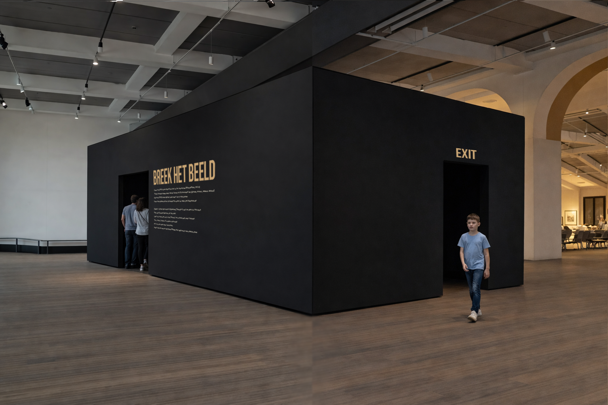
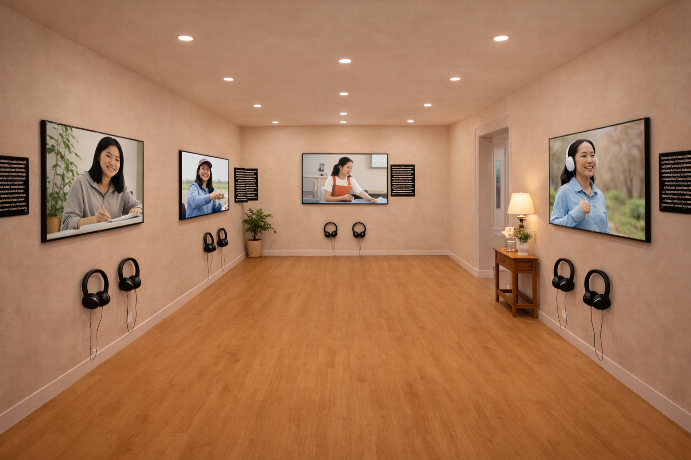
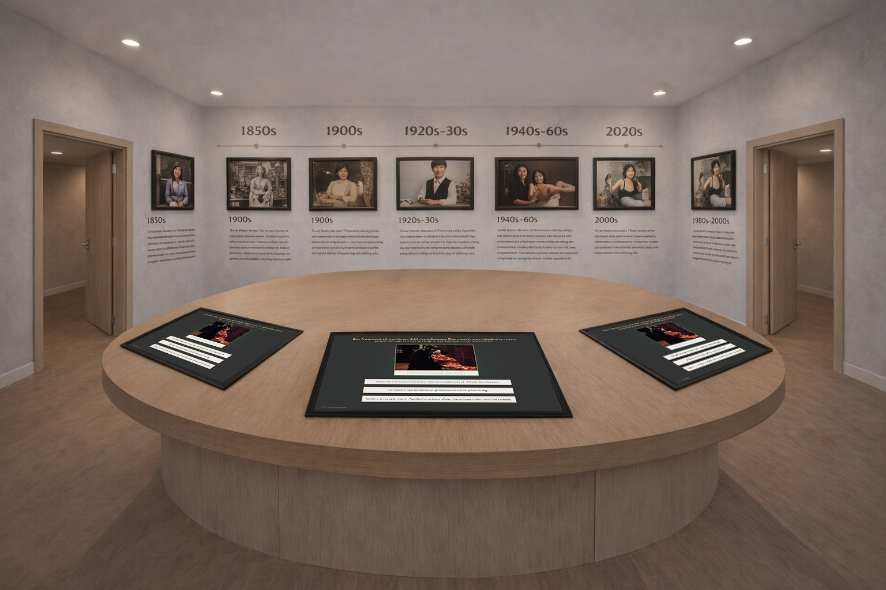
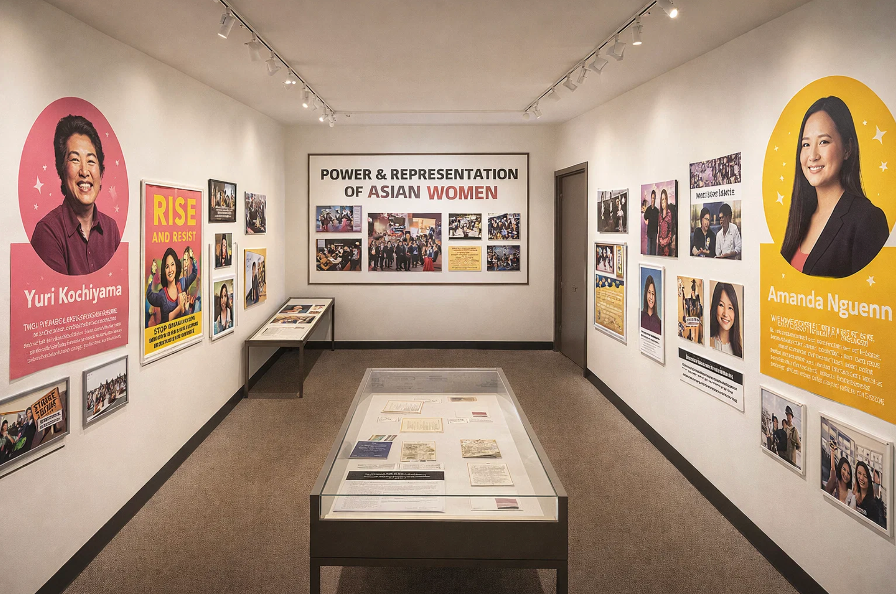

Role
Service designer
Timeline
5 months
Tools
Figma, Adobe Illustrator, Photoshop
Type
Class Project
“Breek het Beeld” is an interactive museum experience made for the Wereld Museum in Amsterdam. It helps teenagers recognize and question stereotypes about Asian women through stories, history, and reflection.

Service designer
5 months
Figma, Adobe Illustrator, Photoshop
Class Project
This project was developed in collaboration with the Wereldmuseum and focused on addressing the stereotyping of Asian women among teenagers aged 14 to 17. The main challenge was to create an experience that raises awareness and encourages reflection without being too confrontational or overwhelming.
This project was developed in collaboration with the Wereldmuseum and focused on addressing the stereotyping of Asian women among teenagers aged 14 to 17. The main challenge was to create an experience that raises awareness and encourages reflection without being too confrontational or overwhelming.
We designed an interactive, multi-zone exhibition called Break the Image, which guides visitors through personal stories, historical context, active learning, and reflection. The experience starts with video portraits that show diverse, real-life perspectives, followed by an interactive quiz that connects modern stereotypes to their historical roots. The exhibition then highlights role models and counter-stereotypes, and ends with a reflection space where visitors can share thoughts anonymously and take practical tips with them.
This structure supports learning, empathy, and self-reflection in a safe and engaging way.

First room of the exhibition

Quiz room

Role model room
The project followed a research-driven and iterative design process. We conducted desk research, interviews with teenagers and experts, and user tests to understand emotional boundaries, learning preferences, and engagement triggers. Tools such as user journeys, personas, stakeholder mapping, and the Value Proposition Canvas helped define the design direction. This process ensured that the design was grounded in real user needs and aligned with the museum’s educational goals.
Multiple concept variations were explored, tested, and refined, including a timeline, social media feed, and reflection wall. Through prototyping and feedback sessions, the final concept was shaped around interaction, clarity, and emotional safety.
This process ensured that the design was grounded in real user needs and aligned with the museum’s educational goals.
Breek het Beeld demo